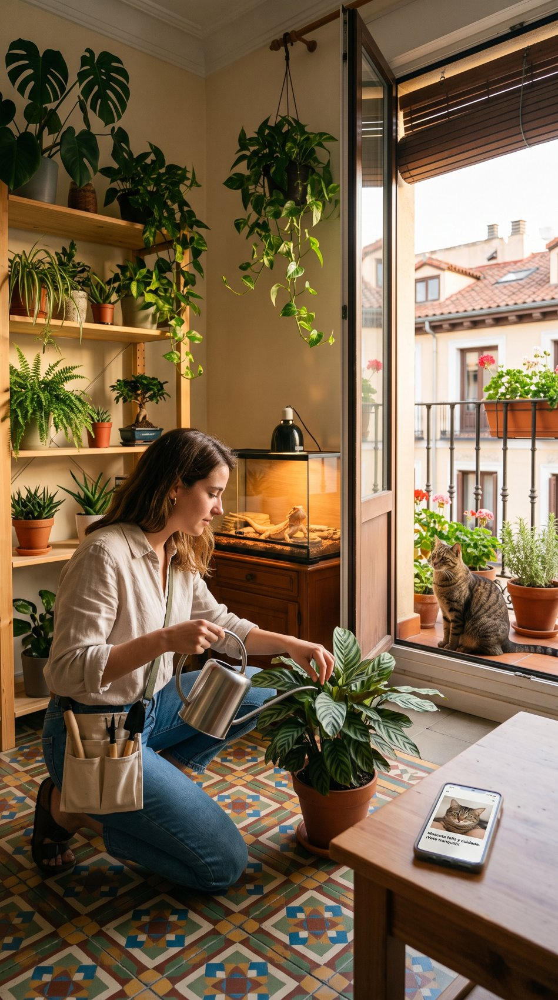

Cuéntalo a tu manera.
Qué vive en casa, qué necesita y qué detalles no se pueden pasar por alto.
Animales, plantas y su rutina
Tu gato, tus plantas y sus pequeñas manías. Cuidado en casa, atento a lo que hace única su rutina.

Tu casa tiene su ritmo.La idea es cuidarlo contigo.Imagen creada con IA
Déjanos tu correo y te contamos cuándo abrimos el piloto en tu barrio.
En la versión publicada, aquí confirmaríamos tu interés. En esta demo no se ha enviado ni guardado tu correo.
PrototipoEl formulario no envía datos. Ver alcance
El cuidado empieza por escuchar.
Una casa · distintas necesidades · un cuidado acordadoLas cosas pequeñas importan
Es saber qué necesita cada uno. Queremos conectar tu casa con personas de tu barrio cuya experiencia encaje con el cuidado que buscas.
La comida de la gata, la planta del salón y esa puerta que debe quedar cerrada. Deja explicado lo importante, en un mismo lugar.
Revisa la experiencia con animales y plantas, y repasa las tareas con la persona que vaya a cuidar.
Nuestra manera de entender el cuidado
Qué vive en casa, qué necesita y qué detalles no se pueden pasar por alto.
Experiencia, tareas, horarios y precio. Lo importante se habla antes de aceptar.
Saber qué se ha hecho y qué necesita atención, sin tener que preguntar por cada detalle.
Así planteamos Todo Sigue Vivo. Esta página presenta el proyecto: no permite contratar visitas ni confirma disponibilidad.
Antes de dar el paso
Para las dos cosas, con el mismo peso. Los hogares con animales y plantas, las colecciones de plantas y los exóticos forman parte de la propuesta. Cada encargo requiere experiencia y tareas acordes a lo que necesita.
Sí, puedes tener los dos intereses. El selector cambia el recorrido de esta página; no te obliga a quedarte en un único papel.
Explicar qué sabes cuidar, tu experiencia y tu disponibilidad. Antes de aceptar un encargo conviene conocer las tareas, el tiempo y lo que cobrarías. Los requisitos del servicio se comunicarán cuando estén definidos.
No. Dejar tu correo expresa interés, no reserva una visita. Además, esta página es una demostración: al probar el formulario no se envía ni se guarda ningún dato.